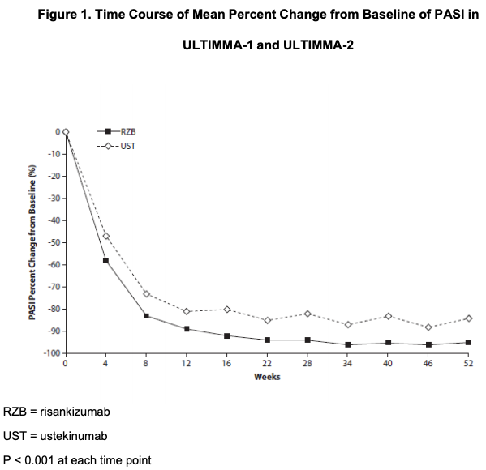
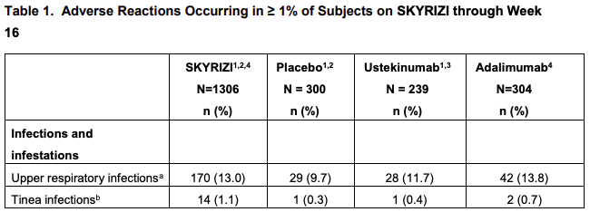
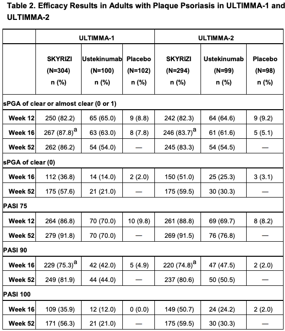
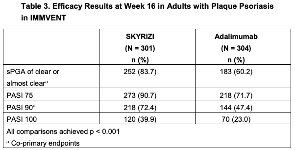
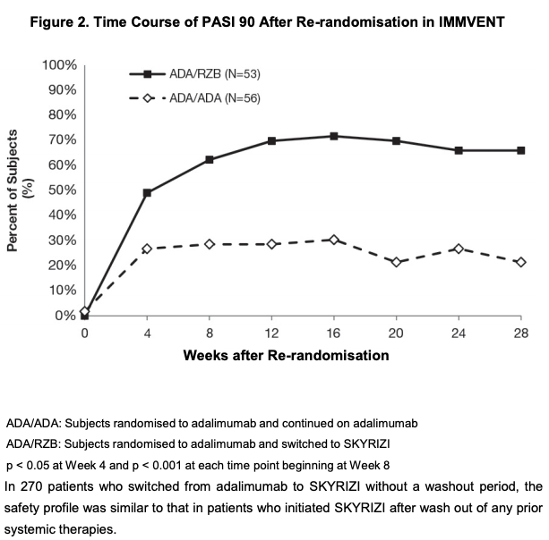
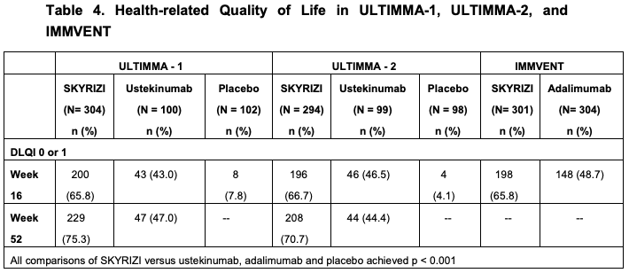

Risankizumab
This medicinal product is subject to additional monitoring in Australia. This will allow quick identification of new safety information. Healthcare professionals are asked to report any suspected adverse events at www.tga.gov.au/reporting-problems.
Each pre-filled syringe contains 75 mg risankizumab in 0.83 mL solution.
SKYRIZI (risankizumab), an interleukin-23 blocker, is a humanised immunoglobin G1 (IgG1) monoclonal antibody. Risankizumab is produced in a mammalian cell line using recombinant DNA technology.
This medicine contains 68.0 mg sorbitol per 150 mg dose.
This medicine contains less than 1 mmol sodium (23 mg) per 150 mg dose and is essentially sodium free.
For the full list of excipients, see Section 6.1 List of Excipients.
Solution for injection in a pre-filled syringe.
The solution is colourless to slightly yellow and clear to slightly opalescent. It may contain a few translucent to white product-related particles. SKYRIZI should not be used if the solution is cloudy or discoloured, or contains large particles.
4.1 Therapeutic indications
Psoriasis
SKYRIZI is indicated for the treatment of moderate to severe plaque psoriasis in adults (18 years or older) who are candidates for phototherapy or systemic therapy.
4.2 Dose and method of administration
The recommended dose is 150 mg (two 75 mg injections) administered by subcutaneous injection at Week 0, Week 4, and every 12 weeks thereafter
Patients may self-inject SKYRIZI after training in subcutaneous injection technique.
Patients should be instructed to inject 2 pre-filled syringes for the full 150 mg dose and to read the Instructions for Use before administration. SKYRIZI is for single use in one patient only. Discard any residue.
For each dose, the injections should be administered at different anatomic locations (such as thighs or abdomen), and not into areas where the skin is tender, bruised, erythematous, indurated or affected by psoriasis. Administration of SKYRIZI in the upper, outer arm may only be performed by a healthcare professional or caregiver.
For a more comfortable injection, patients may remove the carton from the refrigerator before injecting and allow to reach room temperature out of direct sunlight (15 to 30 minutes) without removing the pre-filled syringes from the carton.
Missed Dose
If a dose is missed, administer the dose as soon as possible. Thereafter, resume dosing at the regular scheduled time.
4.3 Contraindications
Hypersensitivity to the active substance or to any of the excipients listed in section 6.1. Clinically important active infections.
4.4 Special warnings and precautions for use
Infections
SKYRIZI may increase the risk of infections.
In patients with a chronic infection or a history of recurrent infection, the risks and benefits should be considered prior to prescribing SKYRIZI. Patients should be instructed to seek medical advice if signs or symptoms of clinically important infection occur. If a patient develops such an infection or is not responding to standard therapy for the infection, the patient should be closely monitored and SKYRIZI should not be administered until the infection resolves.
Tuberculosis
Prior to initiating treatment with SKYRIZI, patients should be evaluated for TB infection. SKYRIZI must not be given to patients with active TB. Patients receiving SKYRIZI should be monitored for signs and symptoms of active TB. Anti-TB therapy should be considered prior to initiating SKYRIZI in patients with a past history of latent or active TB in whom an adequate course of treatment cannot be confirmed.
Across the Phase 3 psoriasis clinical studies, of the 72 subjects with latent tuberculosis (TB) who were concurrently treated with SKYRIZI and appropriate TB prophylaxis during the studies, none developed active TB during the mean follow-up of 61 weeks on SKYRIZI.
Immunisations
Prior to initiating therapy with SKYRIZI, completion of all appropriate immunisations should be considered according to current immunisation guidelines. SKYRIZI should not be used with live vaccines. No data are available on the response to live or inactive vaccines.
Hypersensitivity
If a serious hypersensitivity reaction occurs, administration of risankizumab should be discontinued immediately and appropriate therapy initiated.
Use in Hepatic Impairment
No specific studies were conducted to assess the effect of hepatic impairment on the pharmacokinetics of SKYRIZI. This condition is generally not expected to have any significant impact on the pharmacokinetics of monoclonal antibodies and no dose adjustments are considered necessary (see 5.2 PHARMACOKINETIC PROPERTIES).
Use in Renal Impairment
No specific studies were conducted to assess the effect of renal impairment on the pharmacokinetics of SKYRIZI. This condition is generally not expected to have any significant impact on the pharmacokinetics of monoclonal antibodies and no dose adjustments are considered necessary (see 5.2 PHARMACOKINETIC PROPERTIES).
Use in the elderly
No dose adjustment is required (see 5.2 PHARMACOKINETIC PROPERTIES). There is limited information in subjects aged ≥ 65 years.
Paediatric use
The safety and effectiveness of SKYRIZI in patients less than 18 years of age have not yet been established.
Effects on laboratory tests
No data available.
4.5 Interactions with other medicines and other forms of interactions
SKYRIZI is not expected to undergo metabolism by hepatic enzymes or renal elimination. Drug interactions between SKYRIZI and inhibitors/inducers of drug metabolising enzymes are not expected. Based on results from a drug-drug interaction study in subjects with plaque psoriasis and population pharmacokinetic analyses, risankizumab is not expected to cause or be impacted by drug-drug interactions (see 5.2 PHARMACOKINETIC PROPERTIES - Drug Interactions). No dose adjustment is needed when co-administering risankizumab and cytochrome P450 substrates.
4.6 Fertility, pregnancy and lactation
Effects on fertility
Studies in male cynomolgus monkeys at doses of up to 50 mg/kg/week (about 70 times the clinical exposure at the maximum recommended human dose (MRHD) with risankizumab did not indicate direct or indirect harmful effects on male fertility. The effects of risankizumab were not directly assessed in a dedicated fertility study in female animals. In the 26-week repeat dose toxicology study, histopathology of reproductive organs from both male and female cynomolgus monkeys did not show any relevant adverse finding.
Use in pregnancy (Pregnancy Category B1)
The limited data available with SKYRIZI use in pregnant women are insufficient to inform any drug-associated risks.
An enhanced pre- and post-natal developmental toxicity study was conducted in cynomolgus monkeys. Pregnant cynomolgus monkeys were administered weekly subcutaneous doses of risankizumab at 5 and 50 mg/kg from gestation day 20 to parturition and the cynomolgus monkeys (mother and infants) were followed for 6 months (180 days) after delivery. These doses produced exposures of up to approximately 99 times the clinical exposure at the MRHD. No drug-related fetal/infant deaths and/or malformations were observed. There were no effects on infant growth and development, which included the assessment of external, visceral, skeletal and neurobehavioral parameters and developmental immuno-toxicology endpoints. In the infants, mean serum concentrations increased in a dose-dependent manner and were approximately 17-86% of the respective maternal concentrations. Following delivery, most adult female cynomolgus monkeys and all infants from the risankizumab-treated groups had measurable serum concentrations of risankizumab up to 91 days postpartum. Serum concentrations were below detectable levels at 180 days postpartum.
SKYRIZI should be used in pregnancy only if the benefits outweigh the potential risks.
Use in lactation
It is unknown whether risankizumab is excreted in human milk. Human IgG’s are known to be excreted in breast milk during the first few days after birth, which decreases to low concentrations soon afterwards; consequently, a risk to the breast-fed infant cannot be excluded during this short period. A decision should be made whether to discontinue/abstain from SKYRIZI therapy, taking into account, the benefit of breast-feeding to the child and the benefit of SKYRIZI therapy to the woman
4.7 Effects on ability to drive and use machines
SKYRIZI has no or negligible influence on the ability to drive and use machines.
4.8 Adverse effects (Undesirable effects)
A total of 2234 subjects were treated with SKYRIZI in clinical development studies in plaque psoriasis, representing 2167 subject-years of exposure. Of these, 1208 subjects with psoriasis were exposed to SKYRIZI for at least one year.
Data from placebo- and active-controlled studies were pooled to evaluate the safety of SKYRIZI for up to 16 weeks. In total, 1306 subjects were evaluated in the SKYRIZI 150 mg group. Serious adverse events occurred in 2.4% for the SKYRIZI group (9.9 events per 100 subject-years) compared to 4.0% for the placebo group (17.4 events per 100 subject-years), 5.0% for the ustekinumab group (18.4 events per 100 subject-years) and 3.0% for the adalimumab group (14.7 events per 100 subject-years).
Table 1 summarises the adverse reactions that occurred at ≥ 1% and at a higher rate in the SKYRIZI group than the placebo group during the 16-week controlled period of pooled clinical studies. Adverse reactions are listed by MedDRA system organ class.

Less Common Clinical Trial Adverse Drug Reactions (less than 1%)
Infections and Infestations: folliculitis
Specific Adverse Reactions
Infections
In the first 16 weeks, infections occurred in 22.1% of the SKYRIZI group (90.8 events per 100 subject-years) compared to 14.7% of the placebo group (56.5 events per 100 subject-years), 20.9% of the ustekinumab group (87.0 events per 100 subject-years) and 24.3% of the adalimumab group (104.2 events per 100 subject-years). The majority of cases were nonserious and mild to moderate in severity and did not lead to discontinuation of SKYRIZI.
Over the entire psoriasis program including long-term exposure to SKYRIZI, the rate of infections (75.5 events per 100 subject-years) was similar to that observed during the first 16 weeks of treatment.
Long-Term Safety
A total of 1091 patients had received at least 1 year of risankizumab treatment at the proposed dose of 150 mg up to the time of submission. The frequency of adverse reactions was similar over the long term as that observed during the first 16 weeks of treatment. In ULTIMMA-1 and ULTIMMA-2, through Week 52, the exposure-adjusted rates of serious adverse events per 100 subject-years were 9.4 for subjects treated with SKYRIZI and 10.9 for those treated with ustekinumab.
Immunogenicity
As with all therapeutic proteins, there is the potential for immunogenicity with SKYRIZI. The detection of antibody formation is highly dependent on the sensitivity and specificity of the assay. Additionally, the observed incidence of antibody positivity (including neutralising antibody) in an assay may be influenced by several factors including assay methodology, sample handling, timing of sample collection, concomitant medications, and underlying disease. For these reasons, comparison of incidence of antibodies to risankizumab with the incidence of antibodies to other products may be misleading.
For subjects treated with SKYRIZI at the recommended clinical dose for up to 52 weeks in psoriasis clinical trials, treatment-emergent anti-drug antibodies and neutralising antibodies were detected in 24% (263/1079) and 14% (150/1079) of evaluated subjects, respectively
For most subjects, antibodies to risankizumab including neutralising antibodies were not associated with changes in clinical response or safety. Among the few subjects (approximately 1%; 7/1 000 at Week 16 and 6/598 at Week 52) with high antibody titres (>128), clinical response appeared to be reduced.
Reporting suspected adverse effects
Reporting suspected adverse reactions after registration of the medicinal product is important. It allows continued monitoring of the benefit-risk balance of the medicinal product. In Australia, healthcare professionals are asked to report any suspected adverse reactions at www.tga.gov.au/reporting-problems. In New Zealand, healthcare professionals are asked to report any suspected adverse reactions at https://nzphvc.otago.ac.nz/reporting/
4.9 Overdose
In the event of overdose, it is recommended that the patient be monitored for any signs or symptoms of adverse reactions and appropriate symptomatic treatment be instituted immediately.
For information on the management of overdose in Australia contact the Poisons Information Centre on 131126.
For advice on the management of overdose in New Zealand, please contact the National Poisons Centre on 0800 POISON (0800 764 766).
5.1 Pharmacodynamic properties
ATC code: L04AC18. In a study of subjects with psoriasis, expression of genes associated with the IL-23/IL-17 axis was decreased in the skin after single doses of risankizumab. Reductions in epidermal thickness, infiltration of inflammatory cells, and expression of psoriatic disease markers were also observed in psoriatic lesions.
Mechanism of action
Risankizumab is a humanised immunoglobulin G1 (IgG1) monoclonal antibody that selectively binds with high affinity to the p19 subunit of human interleukin 23 (IL-23) cytokine and inhibits its interaction with the IL-23 receptor complex. IL-23 is a naturally occurring cytokine that is involved in inflammatory and immune responses. IL-23 supports the development, maintenance and activation of Th17 cells, which produces IL-17A, IL-17F, and IL-22, as well as other pro-inflammatory cytokines, and plays a key role in driving inflammatory autoimmune diseases, such as psoriasis. IL-23 is up-regulated in lesional skin in comparison to nonlesional skin of patients with plaque psoriasis. By blocking IL-23 from binding to its receptor, risankizumab inhibits IL-23-dependent cell signalling and release of pro-inflammatory cytokines.
Risankizumab does not bind to human IL-12, which shares the p40 subunit with IL-23.
Clinical trials
The efficacy and safety of SKYRIZI was assessed in 2109 subjects with moderate to severe plaque psoriasis in four multicentre, randomised, double-blind studies (ULTIMMA-1, ULTIMMA-2, IMMHANCE, and IMMVENT). Enrolled subjects were 18 years of age and older with plaque psoriasis who had a body surface area (BSA) involvement of ≥ 10%, a static Physician Global Assessment (sPGA) score of ≥ 3 in the overall assessment (plaque thickness/induration, erythema, and scaling) of psoriasis on a severity scale of 0 to 4, and a Psoriasis Area and Severity Index (PASI) score ≥ 12 and were candidates for systemic therapy or phototherapy.
Overall, subjects had a median baseline PASI score of 17.8 and a median BSA of 20.0%. Baseline sPGA score was severe in 19.3% of subjects. A total of 9.8% of study subjects had a history of diagnosed psoriatic arthritis.
Across all studies, 38.1% of subjects had received prior phototherapy, 48.3% had received prior non-biologic systemic therapy, and 42.1% had received prior biologic therapy for the treatment of psoriasis. Of the subjects who had received prior biologic therapy, 23.7% had received at least one anti-TNF alpha agent.
ULTIMMA-1 and ULTIMMA-2
ULTIMMA-1 and ULTIMMA-2 enrolled 997 subjects (598 randomised to SKYRIZI 150 mg, 199 to ustekinumab 45 mg or 90 mg, and 200 to placebo). Subjects received treatment at Week 0, Week 4, and every 12 weeks thereafter. The results are presented in Table 2 and Figure 1.

Examination of age, gender, race, body weight, baseline PASI score, concurrent psoriatic arthritis, previous non-biologic systemic treatment, previous biologic treatment, and previous failure of a biologic did not identify differences in response to SKYRIZI among these subgroups.
Improvements were observed in psoriasis involving the scalp, the nails, and the palms and soles at Week 16 and Week 52 in subjects treated with SKYRIZI.
IMMHANCE
IMMHANCE enrolled 507 subjects (407 randomised to SKYRIZI 150 mg and 100 to placebo). Subjects received treatment at Week 0, Week 4 and every 12 weeks thereafter. Subjects who were originally on SKYRIZI and had an sPGA response of clear or almost clear at Week 28 were re-randomised to continue SKYRIZI every 12 weeks or have treatment withdrawn.
At Week 16, SKYRIZI was superior to placebo on the co-primary endpoints of sPGA of clear or almost clear (83.5% SKYRIZI vs 7.0% placebo) and PASI 90 (73.2% SKYRIZI vs 2.0% placebo). More subjects on SKYRIZI had clear skin [sPGA 0 (46.4% SKYRIZI vs 1.0% placebo) or PASI 100 (47.2% SKYRIZI vs 1.0% placebo)] at Week 16. Subjects receiving SKYRIZI were also more likely to have a PASI 75 response compared with placebo (88.7% SKYRIZI vs 8.0% placebo).
Of the 31 subjects from the IMMHANCE study with latent tuberculosis (TB) who did not receive prophylaxis during the study, none developed active TB during the mean follow-up of 55 weeks on SKYRIZI.
IMMVENT
IMMVENT enrolled 605 subjects (301 randomised to SKYRIZI and 304 to adalimumab). Subjects randomised to SKYRIZI received 150 mg of treatment at Week 0, Week 4 and every 12 weeks thereafter. Subjects randomised to adalimumab received 80 mg at Week 0, 40 mg at Week 1 and 40 mg fortnightly through Week 15. Starting at Week 16, subjects who were receiving adalimumab continued or switched treatment based on response:
- Less than PASI 50 were switched to SKYRIZI
- PASI 50 to less than PASI 90 were re-randomised to either continue adalimumab or switch to SKYRIZI
- PASI 90 continued to receive adalimumab
Similar results for SKYRIZI at Week 16 were seen in IMMVENT as in other clinical studies (Table 3 and Figure 2)
For subjects who had PASI 50 to less than PASI 90 with adalimumab at Week 16 and were rerandomised, differences in PASI 90 response rates between switching to SKYRIZI and continuing adalimumab were noted as early as 4 weeks after re-randomisation (49.1% vs 26.8%, respectively). 66.0% (35/53) of subjects achieved PASI 90 following 28 weeks of SKYRIZI, compared with 21.4% (12/56) who continued to receive adalimumab. Other levels of response were also higher following SKYRIZI: 39.6% PASI 100, 39.6% sPGA clear, and 73.6% sPGA clear or almost clear had response after switching to SKYRIZI, compared with 7.1% PASI 100, 7.1% sPGA clear, and 33.9% sPGA clear or almost clear who continued to receive adalimumab.
In 270 patients who switched from adalimumab to SKYRIZI without a washout period, the safety profile was similar to that in patients who initiated SKYRIZI after wash out of any prior systemic therapies.
Maintenance and Durability of Response
In an integrated analysis of subjects receiving SKYRIZI in ULTIMMA-1 and ULTIMMA-2 for PASI 100 responders at Week 16, 79.8% (206/258) of the subjects who continued on SKYRIZI maintained the response at Week 52. For PASI 90 responders at Week 16, 88.4% (398/450) of subjects maintained the response at Week 52.
Among subjects with sPGA of clear or almost clear at Week 28 in IMMHANCE, 87.4% (97/111) of subjects re-randomised to continued treatment with SKYRIZI maintained this response at Week 52 compared to 61.3% (138/225) who were re-randomised to withdrawal from SKYRIZI.
Quality of Life/Patient-Reported Outcomes
Significantly more subjects treated with SKYRIZI achieved a Dermatology Life Quality Index (DLQI) score of 0 or 1 [no impact on health-related quality of life] at Week 16 compared with placebo, adalimumab, or ustekinumab (Table 4). Improvement in health-related quality of life continued through Week 52 (ULTIMMA-1 and ULTIMMA-2
In ULTIMMA-1 and ULTIMMA-2, significantly greater improvements in psoriasis symptoms (itch, pain, redness and burning, as measured by the Psoriasis Symptom Score [PSS]) were demonstrated with SKYRIZI compared to placebo at Week 16. A significantly greater proportion of subjects on SKYRIZI achieved a PSS of 0 (symptom-free) at Week 16 compared with ustekinumab and with placebo. By Week 52, 55.7% (333/598) of subjects on SKYRIZI reported no itch, pain, redness or burning.
Anxiety and depression, as measured by the Hospital Anxiety and Depression Scale (HADS) improved in the SKYRIZI group at Week 16 compared with those receiving placebo in ULTIMMA-1 and ULTIMMA-2.
A greater improvement in the Work Limitations Questionnaire (WLQ) at Week 16 was achieved in subjects receiving SKYRIZI compared with those receiving adalimumab in IMMVENT.
5.2 Pharmacokinetic properties
Absorption
Risankizumab exhibited linear pharmacokinetics with dose-proportional increase in exposure across dose ranges of 18 to 300 mg and 0.25 to 1 mg/kg administered subcutaneously, and 200 to 1200 mg and 0.01 to 5 mg/kg administered intravenously
Following subcutaneous dosing of risankizumab, peak plasma concentrations were achieved between 3 - 14 days after dosing with an estimated absolute bioavailability of 89%. With the dosing regimen in subjects with psoriasis (150 mg at Week 0, Week 4, and every 12 weeks thereafter), estimated steady-state peak and trough plasma concentrations are 12 and 2 micrograms/mL, respectively.
Distribution
In a typical 90 kg subject with psoriasis, the steady-state volume of distribution (Vss) was 11.2L, indicating that the distribution of risankizumab is primarily confined to the vascular and interstitial spaces.
Metabolism
Therapeutic IgG monoclonal antibodies are typically degraded into small peptides and amino acids via catabolic pathways in the same manner as endogenous IgGs. Risankizumab is not expected to be metabolised by cytochrome P450 enzymes.
Excretion
The systemic clearance (CL) of risankizumab was 0.31 L/day and terminal elimination half-life was 28 days for a typical 90 kg subject with psoriasis
As an IgG1 monoclonal antibody, risankizumab is not expected to be filtered by glomerular filtration in the kidneys or to be excreted as an intact molecule in the urine
Drug Interactions
A drug interaction study was conducted in subjects with plaque psoriasis to assess the effect of repeated administration of risankizumab on the pharmacokinetics of cytochrome P450 (CYP) sensitive probe substrates. The exposure of caffeine (CYP1A2 substrate), warfarin (CYP2C9 substrate), omeprazole (CYP2C19 substrate), metoprolol (CYP2D6 substrate) and midazolam (CYP3A4 substrate) following risankizumab treatment were comparable to their exposures prior to risankizumab treatment, indicating no clinically meaningful drug interactions through these enzymes.
Population pharmacokinetic analyses indicated that risankizumab exposure was not impacted by concomitant medications (metformin, atorvastatin, lisinopril, amlodipine, ibuprofen, acetylsalicylate and levothyroxine) used by some subjects with plaque psoriasis during the clinical studies (see 4.4 Interactions with other medicines and other forms of interactions).
Paediatrics
The pharmacokinetics of risankizumab in paediatric subjects has not been established.
Use in the elderly
Of the 2234 subjects with plaque psoriasis exposed to SKYRIZI, 243 were 65 years or older and 24 subjects were 75 years or older. No overall differences in risankizumab exposure, safety and effectiveness were observed between older and younger subjects who received SKYRIZI (see 4.3 Special warnings and precautions for use - Use in the Elderly).
Renal or hepatic impairment
No specific studies have been conducted to determine the effect of renal or hepatic impairment on the pharmacokinetics of risankizumab. Based on population pharmacokinetic analyses, serum creatinine levels, creatinine clearance, or hepatic function markers (ALT/AST/bilirubin) did not have a meaningful impact on risankizumab clearance in subjects with psoriasis.
As an IgG1 monoclonal antibody, risankizumab is mainly eliminated via intracellular catabolism and is not expected to undergo metabolism via hepatic cytochrome P450 enzymes or renal elimination (see4.3 Special warnings and precautions for use - Use in hepatic impairment, use in renal impairment).
Body weight
Risankizumab clearance and volume of distribution increase as body weight increases. However, clinically meaningful changes in efficacy and safety of risankizumab were not observed with increased body weight, therefore no dose adjustment is necessary based on body weight.
Gender or race
The clearance of risankizumab was not significantly influenced by gender or race (Asian subjects compared to non-Asian subjects including Caucasians) in adult subjects with plaque psoriasis based on population pharmacokinetic analyses. No clinically meaningful differences in risankizumab exposure were observed after accounting for body weight differences in Chinese or Japanese subjects compared to Caucasian subjects in a clinical pharmacokinetic study.
5.3 Preclinical_safety_data
Non-clinical data revealed no special hazard for humans based on repeat-dose toxicity studies including safety pharmacology evaluations, and a reproductive and developmental toxicity study in cynomolgus monkeys at doses of up to 50 mg/kg/week (producing exposures of about 70 times the clinical exposure at MRHD).
Genotoxicity
Genotoxicity studies have not been conducted with risankizumab.
Carcinogenicity
Carcinogenicity studies have not been conducted with risankizumab. In a 26-week chronic toxicology study in cynomolgus monkeys at doses of up to 50 mg/kg/week (about 70 times the clinical exposure at the MRHD), there were no pre-neoplastic or neoplastic lesions observed.
6.1 List of excipients
Each pre-filled syringe contains sodium succinate hexahydrate (0.88 mg), succinic acid (0.049 mg), sorbitol (34.0 mg), polysorbate 20 (0.17 mg) and water for injections.
6.2 Incompatibilities
In the absence of compatibility studies, this medicinal product must not be mixed with other medicinal products.
6.3 Shelf life
In Australia, information on the shelf life can be found on the public summary of the Australian Register of Therapeutic Goods (ARTG). The expiry date can be found on the packaging.
6.4 Special precautions for storage
Store at 2°C to 8°C. Refrigerate. Do not freeze. Keep the prefilled syringes in the outer carton in order to protect from light.
6.5 Nature and contents of container
SKYRIZI is supplied as a sterile solution for subcutaneous injection. Each pre-filled syringe with needle guard contains 75 mg of risankizumab in 0.83 mL in the following packaging configuration:
- Each carton contains 2 pre-filled syringes and 2 alcohol pads.
6.6 Special precautions for disposal
In Australia, any unused medicine or waste material should be disposed of by taking to your local pharmacy.
6.7 Physicochemical properties
CAS number
CAS Registry Number: 1612838-76-2
7 MEDICINE SCHEDULE (POISONS STANDARD)
Schedule 4 – Prescription Only Medicine
8 SPONSOR
AbbVie Pty Ltd
241 O’Riordan Street
Mascot NSW 2020
AUSTRALIA
PH: 1800 043 460
www.abbvie.com.auAbbVie Limited
6th Floor, 156-158 Victoria Street
Wellington 6011
NEW ZEALAND
PH: 0800 900 030
www.abbvie.co.nz9 DATE OF FIRST APPROVAL
16 July 2019
10 DATE OF REVISION
Not applicable.